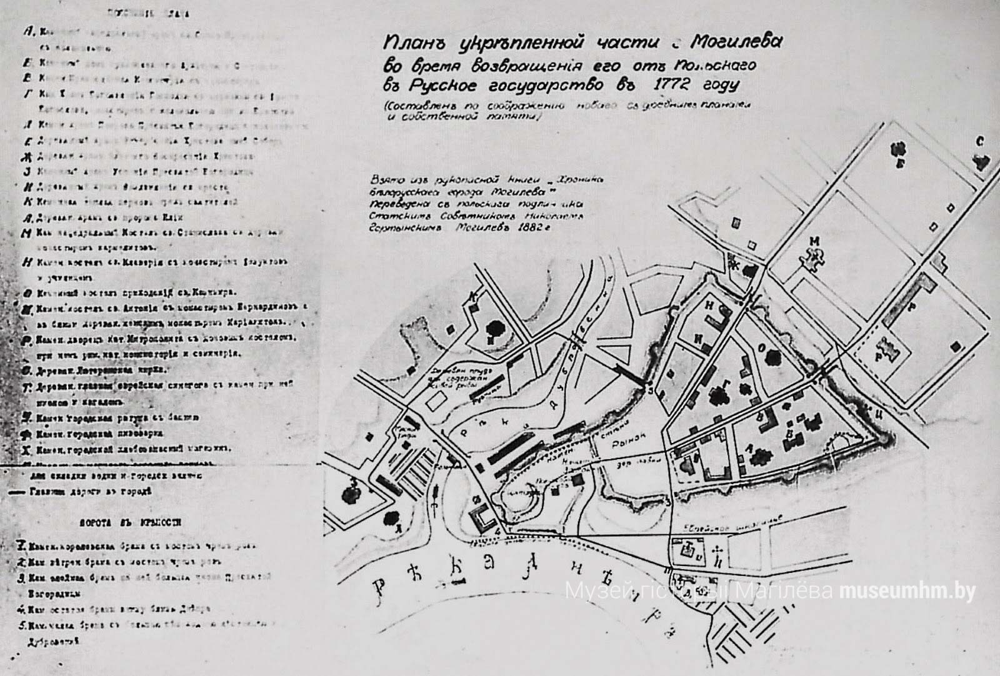
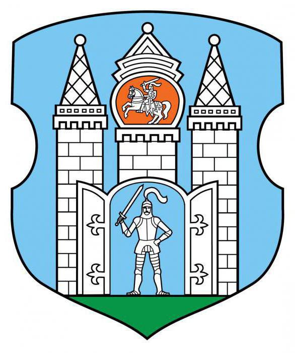
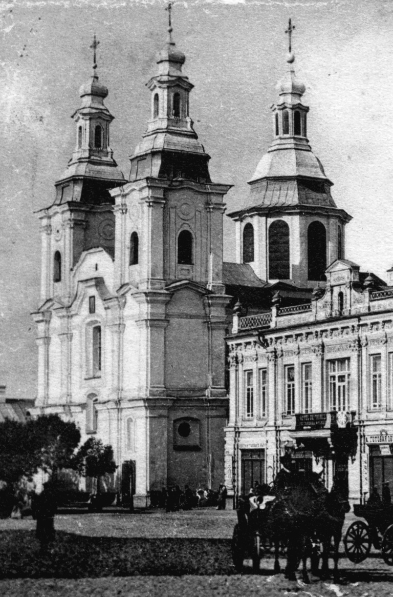

В. Ф. Копытин утверждал, что Могилёв первоначально возник как сторожевой город-крепость в окружении ремесленных и сельских поселений XI—XII веков. Он считал, что Могилёв в то время был городом-замком, поставленным на южных границах Полоцкого княжества. Обилие курганов вокруг древнего центра Могилёва он ставил в доказательство существования феодального центра. Копытин учитывал то, что слово «город» в древнерусском языке значило не город в социально-экономическом значении, а укреплённое поселение. Значит «городами» являлись как средневековые города, так и военные крепости, феодальные замки и укреплённые деревни. Поэтому, согласно версии Копытина, с приходом славян Могилёв вполне мог считаться городом. Подтверждают гипотезу Копытина находки орудий труда, предметов быта, оружия, украшений, собранные И. Г. Ионе в 1969—1972 годах и единичные фрагменты керамики, характерные для XI века. Также подтверждают гипотезу и донца могилёвских горшков с княжеским знаком, найденные в 1994 году во время раскопок на территории могилёвского замчища археологом И. А. Марзалюком, и исследования российского учёного С. В. Белецкого, который идентифицировал княжеский знак на донце как принадлежащий князю Всеславу Изяславовичу[1]. Можно выдвинуть предположение, что Могилёв как центр княжеской администрации существовал в 1002—1003 годах, во времена князя Всеслава Изяславовича. В литературе уже выдвигалась гипотеза, что в XI веке на территории замчища существовал «погост» — место сбора дани у населения. Наидревнейшим письменным источником, в котором упоминается Могилёв, является «Список русских городов дальних и ближних». Этот список был составлен не раньше 1394 года. Нынешняя дата основания — 1267 год — была введена Н. Гортынским во второй половине XIX века, но документального подтверждения не имеет.

О происхождении названия города достоверных сведений нет; имеются только предположения, предания и легенды. В основе названия может лежать личное имя Могила, о чём свидетельствует наличие притяжательного суффикса «-ёв», обычно сочетающегося с личными именами. Однако конкретное лицо с таким именем в истории города не установлено. Во вступлении к «Могилёвской хронике» говорится, что это название происходит от имени князя Льва Даниловича Могия (могучий лев), который в 1267 году построил Могилёвский замок. Некоторые исследователи связывают происхождение названия города с именем полоцкого князя Льва Владимировича, или Льва Могучего. Существует также версия о происхождении названия города от финно-угорского «могиляй» — «горы над водой».

Очередной этап в развитии Могилёва начался в XII — первой половине XIII веков. Культурный слой, который говорит о жизни людей, найден на территории замчища — на месте современного парка им. Горького, возле нынешних строений горводоканала, в районе Борисоглебской и Крестовоздвиженской церквей, и на небольшой части Могилёвского (Быховского) рынка. Могилёвский замок. Гравюра XVIII века. В XII веке на месте нынешнего парка им. Горького существовало укреплённое городище. В XII—XIII веках здесь процветала жизнь. Это доказывают найденные во время раскопок Марзалюка стеклянные браслеты, элементы оружия, шлаки, куски меди, серебра, бронзы, металлические орудия труда, разнообразная керамика, обработанная кость, донца с княжескими знаками. Результаты исследований оборонительных конструкций и найденной в них керамики XII века позволяют сделать вывод — первый этап работ по строительству оборонительных сооружений начался именно в это время. На основании находок, площади городища, наличия укреплений исследователь делает вывод, что на территории городища присутствует княжеская администрация и воины, развиваются гончарство, металлообработка, обработка кости. Последние исследования показали, что Могилёв того времени являлся центром феодальной усадьбы-вотчины, также, возможно, в это время он был пограничной крепостью. Многочисленные войны неоднократно разрушали сам город, но его крепость выстояла, а её немногочисленные сооружения, дошедшие до наших дней, являются основными памятниками старого Могилёва. С течением времени город превратился в крупный торговый и ремесленный центр с эффективной системой оборонительных укреплений. В Белоруссии не было города, который, подобно Могилёву, имел бы три пояса укреплений. Рассредоточенные по всему центральному району города и за его пределами памятники истории сохраняют колорит исторического прошлого города на Днепре. В первой половине XIII века, вероятно, во время набега монголо-татары захватили и сожгли Могилёв. Это подтверждают последние археологические исследования.

В 1358 году Могилёв вошёл в состав Великого княжества Литовского. Сразу после этого город становится центром могилёвской волости (Витебское воеводство) и одним из уделов великого князя Ольгерда. После его смерти, в 1377 году, Могилёв стал владением Ягайло. После город с волостью на несколько последующих столетий становится наследственным имением династии Ягеллонов. Ягайло, женившись на польской королеве Ядвиге, передал ей Могилёв в пожизненное пользование со всеми доходами с населения. Могилёв в 1430 году поддержал избрание на престол Свидригайло. В Могилёве в честь пророка Ильи, по приказу князя Казимира Ягеллончика, в память о спасении его жены в день святого пророка Ильи от утопления, в 1460 году на берегу Днепра могилёвские мастера построили деревянную Ильинскую церковь. Под 1480 годом в книгах Великого княжества Литовского Могилёв упоминается как город, который имел таможенную заставу. В XVI веке Могилёв окончательно стал городом: сформировалась структура, выросло население, развивались ремесла и торговля. В 1503 году Могилёв и волость стали свадебными подарками великого князя Александра Елене, дочери московского князя, в пожизненное владение. После падения Смоленска и его перехода в состав Великого княжества Московского в 1514 году Могилёв взял его функции. В Могилёв переехали многие смоленские купцы, привезли свои капиталы и переадресовали в Могилёв свои дела и связи. Выгодное транспортное и удобное военно-стратегическое положения и предприимчивость купцов сделали его крупнейшим торговым узлом на востоке Великого княжества Литовского. Также Могилёв нередко был залоговым, так как великие князья брали взаймы у богатых людей и отдавали кредитодателям Могилёв в «держание». Из-за этого полноценное экономическое и культурное развитие города было невозможным, поскольку кредитодатели выжимали из города максимум доходов. 5 декабря 1522 года Великий князь Литовский и Король Польский Сигизмунд I подписал грамоту князю В. Соломерецкому на пожизненное владение замком и Могилёвской волостью.